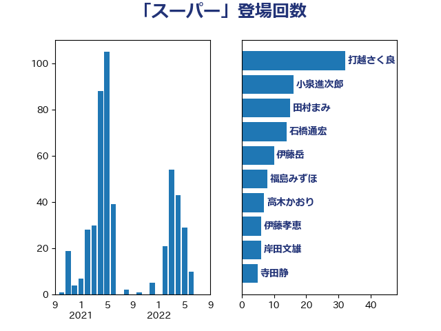

単語「スーパー」

| 打越さく良 | 立憲民主党 | 32 回 |
| 小泉進次郎 | 自由民主党 | 16 回 |
| 田村まみ | 国民民主党 | 15 回 |
| 石橋通宏 | 立憲民主党 | 14 回 |
| 伊藤岳 | 日本共産党 | 10 回 |
| 福島みずほ | 社会民主党 | 8 回 |
| 高木かおり | 日本維新の会 | 7 回 |
| 伊藤孝恵 | 国民民主党 | 6 回 |
| 岸田文雄 | 自由民主党 | 6 回 |
| 寺田静 | 無所属 | 5 回 |
| 横沢高徳 | 立憲民主党 | 5 回 |
| 若宮健嗣 | 自由民主党 | 5 回 |
| 萩生田光一 | 自由民主党 | 5 回 |
| 須藤元気 | 無所属 | 5 回 |
| 岸真紀子 | 立憲民主党 | 4 回 |
| 石井章 | 日本維新の会 | 4 回 |
| 菅家一郎 | 自由民主党 | 4 回 |
| 西村康稔 | 自由民主党 | 4 回 |
| 住吉寛紀 | 日本維新の会 | 3 回 |
| 吉良よし子 | 日本共産党 | 3 回 |
| 大西健介 | 立憲民主党 | 3 回 |
| 後藤祐一 | 立憲民主党 | 3 回 |
| 柳ヶ瀬裕文 | 日本維新の会 | 3 回 |
| 梅村みずほ | 日本維新の会 | 3 回 |
| 梶山弘志 | 自由民主党 | 3 回 |
| 森山浩行 | 立憲民主党 | 3 回 |
| 浅田均 | 日本維新の会 | 3 回 |
| 紙智子 | 日本共産党 | 3 回 |
| 足立敏之 | 自由民主党 | 3 回 |
| ながえ孝子 | 無所属 | 2 回 |
| 上田清司 | 国民民主党 | 2 回 |
| 五十嵐清 | 自由民主党 | 2 回 |
| 倉林明子 | 日本共産党 | 2 回 |
| 奥下剛光 | 日本維新の会 | 2 回 |
| 梅村聡 | 日本維新の会 | 2 回 |
| 泉健太 | 立憲民主党 | 2 回 |
| 浅川義治 | 日本維新の会 | 2 回 |
| 田嶋要 | 立憲民主党 | 2 回 |
| 田村貴昭 | 日本共産党 | 2 回 |
| 茂木敏充 | 自由民主党 | 2 回 |
| 落合貴之 | 立憲民主党 | 2 回 |
| 赤羽一嘉 | 公明党 | 2 回 |
| 足立康史 | 日本維新の会 | 2 回 |
| 長友慎治 | 国民民主党 | 2 回 |
| 青木愛 | 立憲民主党 | 2 回 |
| 中村裕之 | 自由民主党 | 1 回 |
| 中西祐介 | 自由民主党 | 1 回 |
| 二階俊博 | 自由民主党 | 1 回 |
| 仁木博文 | 無所属 | 1 回 |
| 佐々木紀 | 自由民主党 | 1 回 |
| 北神圭朗 | 無所属 | 1 回 |
| 古賀之士 | 立憲民主党 | 1 回 |
| 吉田統彦 | 立憲民主党 | 1 回 |
| 坂本祐之輔 | 立憲民主党 | 1 回 |
| 大島敦 | 立憲民主党 | 1 回 |
| 大石あきこ | れいわ新選組 | 1 回 |
| 大野泰正 | 自由民主党 | 1 回 |
| 奥野総一郎 | 立憲民主党 | 1 回 |
| 安江伸夫 | 公明党 | 1 回 |
| 宮本岳志 | 日本共産党 | 1 回 |
| 宮本徹 | 日本共産党 | 1 回 |
| 小山展弘 | 立憲民主党 | 1 回 |
| 小島敏文 | 自由民主党 | 1 回 |
| 小野泰輔 | 日本維新の会 | 1 回 |
| 小野田紀美 | 自由民主党 | 1 回 |
| 山口晋 | 自由民主党 | 1 回 |
| 岩渕友 | 日本共産党 | 1 回 |
| 平山佐知子 | 無所属 | 1 回 |
| 平林晃 | 公明党 | 1 回 |
| 斎藤嘉隆 | 立憲民主党 | 1 回 |
| 本村伸子 | 日本共産党 | 1 回 |
| 杉尾秀哉 | 立憲民主党 | 1 回 |
| 東徹 | 日本維新の会 | 1 回 |
| 松沢成文 | 日本維新の会 | 1 回 |
| 柚木道義 | 立憲民主党 | 1 回 |
| 櫻井周 | 立憲民主党 | 1 回 |
| 武井俊輔 | 自由民主党 | 1 回 |
| 江田憲司 | 立憲民主党 | 1 回 |
| 池畑浩太朗 | 日本維新の会 | 1 回 |
| 河西宏一 | 公明党 | 1 回 |
| 河野義博 | 公明党 | 1 回 |
| 海江田万里 | 立憲民主党 | 1 回 |
| 清水真人 | 自由民主党 | 1 回 |
| 清水貴之 | 日本維新の会 | 1 回 |
| 源馬謙太郎 | 立憲民主党 | 1 回 |
| 片山さつき | 自由民主党 | 1 回 |
| 田中健 | 国民民主党 | 1 回 |
| 田村智子 | 日本共産党 | 1 回 |
| 神田潤一 | 自由民主党 | 1 回 |
| 稲富修二 | 立憲民主党 | 1 回 |
| 笠井亮 | 日本共産党 | 1 回 |
| 笹川博義 | 自由民主党 | 1 回 |
| 米山隆一 | 立憲民主党 | 1 回 |
| 緑川貴士 | 立憲民主党 | 1 回 |
| 美延映夫 | 日本維新の会 | 1 回 |
| 藤巻健太 | 日本維新の会 | 1 回 |
| 藤木眞也 | 自由民主党 | 1 回 |
| 西村智奈美 | 立憲民主党 | 1 回 |
| 赤嶺政賢 | 日本共産党 | 1 回 |
| 重徳和彦 | 立憲民主党 | 1 回 |
| 野上浩太郎 | 自由民主党 | 1 回 |
| 野田佳彦 | 立憲民主党 | 1 回 |
| 野田聖子 | 自由民主党 | 1 回 |
| 金子恵美 | 立憲民主党 | 1 回 |
| 鈴木義弘 | 国民民主党 | 1 回 |
| 鈴木英敬 | 自由民主党 | 1 回 |
| 高橋千鶴子 | 日本共産党 | 1 回 |
| 高階恵美子 | 自由民主党 | 1 回 |
| 麻生太郎 | 自由民主党 | 1 回 |